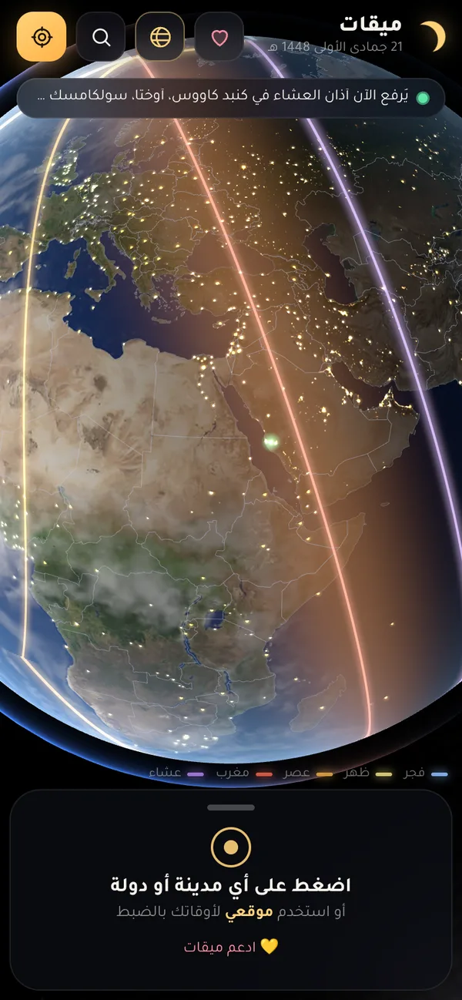
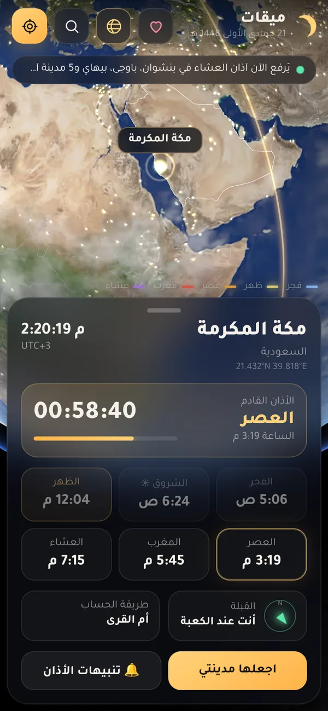
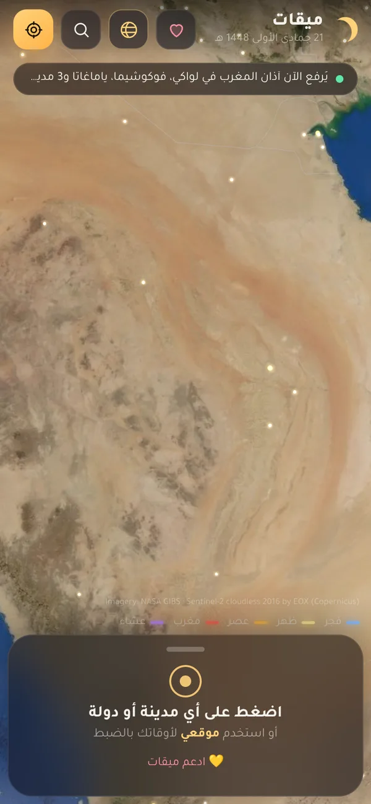
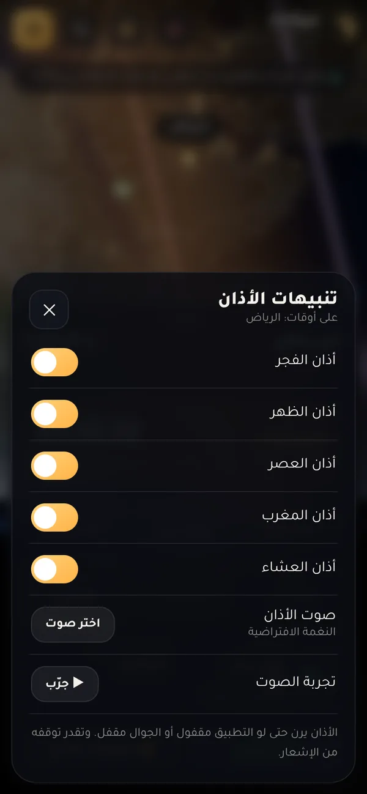

الأذان ما يوقف أبداً
في كل لحظة، فيه مدينة على الأرض يُرفع فيها الأذان. ميقات يرسم هالشي قدامك: خمس خطوط تمشي على الكرة مع حركة الشمس، وكل خط يمر الحين على المدن اللي حان فيها وقت صلاته.
- الفجر حيث يبدأ ضوء الصباح يطلع
- الظهر حيث الشمس في أعلى السماء
- العصر حيث ظل كل شي صار بطوله
- المغرب حيث الشمس غابت للتو
- العشاء حيث اختفى آخر ضوء في السماء


اضغط على أي مكان
مدينة، قرية، أو نقطة في نص الصحراء. الأوقات تنحسب لإحداثيات المكان اللي ضغطت عليه بالضبط، وبطريقة الحساب الرسمية لدولته: أم القرى للسعودية، والهيئة المصرية لمصر، وهكذا.
ومعها عداد للأذان القادم، واتجاه القبلة، وكم تبعد عن مكة.

قرّب لين تشوف حيّك
الشمس والقمر في مكانهم الحقيقي، والليل والنهار يمشون على الكرة لحظة بلحظة. وكل ما قرّبت، تتحمّل صور أقمار صناعية أوضح للمكان اللي تشوفه.

يرفع الأذان وهو مقفول
اختر مدينتك أو اضغط "موقعي"، والتطبيق يرن وقت كل أذان حتى لو الجوال مقفل. تقدر تطفي أي صلاة، وتختار صوت الأذان اللي تحبه من جوالك.
كل اللي في ميقات
الأوقات
- الفجر والشروق والظهر والعصر والمغرب والعشاء لأي مكان في العالم
- أكثر من 7300 مدينة، أو أي نقطة تضغط عليها على الخريطة
- طريقة الحساب الرسمية لكل دولة تلقائياً، والعصر حنفي للدول اللي تعتمده
- عداد تنازلي للأذان القادم، وشريط يوضح كم مضى من الوقت
- عشاء أم القرى بعد المغرب بساعتين في رمضان
- يضبط نفسه مع تغيّر الفصول والتوقيت الصيفي
- التاريخ الهجري بتقويم أم القرى
الكرة الأرضية
- الشمس والقمر في مكانهم الحقيقي، والليل والنهار يتحركون لحظة بلحظة
- أنوار المدن بالليل، والنجوم ودرب التبانة حول الأرض
- خطوط الأذان الخمسة تمشي على الكرة مع الشمس
- شريط "يُرفع الآن أذان..." يقولك وين الأذان هالحين
- صور أقمار صناعية أوضح كل ما قرّبت
- حدود الدول، ولما تختار مدينة تنور حدود دولتها
القبلة والموقع
- زر "موقعي" يحدد مكانك بالضبط ويحسب أوقاتك
- لما تسافر، يحدّث موقعك تلقائياً والأذان يمشي على أوقات المدينة اللي أنت فيها
- بوصلة قبلة حقيقية تلف مع جوالك، وتهتز لما تصير باتجاه الكعبة
- اتجاه القبلة بالدرجة، وكم تبعد عن مكة
- قوس أخضر على الكرة من مدينتك للكعبة
- بحث بالعربي والإنجليزي عن أي مدينة أو دولة
الأذان والتنبيهات
- يرفع الأذان حتى والتطبيق مقفول والجوال مقفل
- تشغيل أو إطفاء كل صلاة لحالها
- صوت أذان كامل، أو نغمة، أو صوت إشعار فقط، أو أي ملف من جوالك
- شاشة أذان تطلع فوق قفل الشاشة، وفيها زر إيقاف
- تذكير قبل الأذان بـ 5 أو 10 أو 15 أو 30 دقيقة
- تذكير الجمعة قبل الصلاة بـ 45 دقيقة
- ضبط كل صلاة بالدقيقة عشان تطابق مسجد حيّك
- ويدجت للشاشة الرئيسية فيه الأذان القادم وعداد حي
الخصوصية والاستخدام
- مجاني بالكامل، بدون إعلانات ولا حسابات
- ما يجمع أي بيانات، وموقعك يبقى في جوالك
- الأوقات تشتغل بدون إنترنت
- تصميم عربي كامل
- يعلمك داخل التطبيق إذا نزلت نسخة جديدة
عندك آيفون أو كمبيوتر؟
ملف التطبيق للأندرويد بس، لكن النسخة الويب تشتغل على أي جهاز وفيها الكرة والأوقات والبحث والموقع. الشي الوحيد اللي ما تقدر تسويه: ترفع الأذان وهي مقفولة.
على الآيفون
- افتح النسخة الويب من Safari.
- اضغط زر المشاركة تحت.
- اختر "إضافة إلى الشاشة الرئيسية".
على الكمبيوتر
- افتح النسخة الويب من Chrome أو Edge.
- اضغط أيقونة التثبيت في شريط العنوان.
- بيصير عندك ميقات كبرنامج في قائمة ابدأ.
طريقة التثبيت
- حمّل الملف من الزر تحت. بيوصلك ملف اسمه Miqat.apk.
- افتح الملف من الإشعار أو من مجلد التنزيلات.
- اسمح بالتثبيت إذا قال لك "مصدر غير معروف": اضغط الإعدادات، وفعّل السماح لهذا المصدر.
- إذا طلع تحذير Play Protect اضغط "التثبيت على أي حال". يطلع لأن التطبيق من برا المتجر، مو لأن فيه مشكلة.
- افتح ميقات واضغط زر "موقعي" عشان تضبط أوقاتك. وإذا عندك سامسونج، خل التطبيق "غير مقيد" في إعدادات البطارية عشان ما يتأخر الأذان.
خصوصيتك
ميقات ما يجمع أي بيانات عنك، وما فيه حسابات ولا إعلانات ولا تتبّع. موقعك يُستخدم داخل جوالك بس عشان يحسب الأوقات، وما يطلع منه لأي مكان.
الشي الوحيد اللي يحتاج إنترنت هو صور الأقمار الصناعية لما تقرّب على الخريطة، وتجي من خوادم ناسا وEOX. بدون إنترنت، كل شي ثاني يشتغل عادي.
هذا الموقع يحسب عدد الزيارات والتحميلات بس، عن طريق GoatCounter. ما يستخدم كوكيز وما يحفظ أي شي يعرّف عليك. التطبيق نفسه ما يرسل شي.
تواصل معنا
لقيت مشكلة، أو عندك اقتراح، أو وقت صلاة ما يطابق مسجدك؟ راسلنا وبنرد عليك.
miqatsa09@gmail.comادعم ميقات
إذا أعجبك التطبيق وتبي تساعد في تطويره، تقدر تدعمه بأي مبلغ بتحويل بنكي.
جزاك الله خير، أي دعم يفرق.